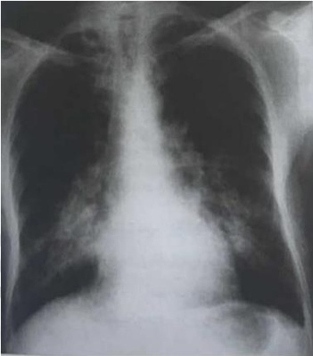

Homem de 58 anos de idade comparece em consulta ambulatorial com queixa de que, há cerca de um mês, apresenta cefaleia unilateral em peso, intermitente, de moderada intensidade, que piora ao se alimentar e irradia para a mandíbula. Refere ainda fadiga e sensação de febre, não aferida. Exame físico sem alterações. Os exames evidenciaram: proteína C reativa 45mg/L (VR < 5mg/L); velocidade de hemossedimentação 110mm/h (VR < 15mm/h); creatinina 1,0mg/dL (VR 0,7 - 1,2mg/dL); ureia 42mg/dL (VR 10 - 50mg/dL); sódio 138mEq/L (VR 135 - 145mEq/L); potássio 4,2mEq/L (VR 3,5 - 5,0mEq/L); hemoglobina 11,0g/dL (VR 13,5 - 17,5g/dL); leucócitos 9mil/mm (VR 4,00 - 11,00mil/mm³) e plaquetas 350mil/mm³ (VR 150 - 400mil/mm³). Tomogra a computadorizada do crânio sem alterações. Quais são as condutas diagnóstica e terapêutica que devem ser adotadas neste momento?
Úlceras orais recorrentes, úlceras genitais recorrentes, uveíte, eritema nodoso e teste de patergia positivo são achados típicos na:
Mulher de 35 anos de idade, previamente hígida, comparece ao ambulatório com queixa de artralgias nos joelhos e punhos, sensação de febre não aferida intermitente, cefaleia bitemporal e aftas orais recorrentes há 5 meses. Também apresentou lesões descritas como sendo "similares à acne" no seu tronco e nos braços, autolimitadas, que agora não estão presentes. Também teve alguns episódios de diarreia, que foram tratados com uso de antibióticos e loperamida, após atendimento em unidade de pronto atendimento. Hoje, tem queixa também de úlceras genitais dolorosas, sendo este o terceiro episódio apresentado neste período. Ao exame físico, apresenta lesões genitais rasas, de fundo limpo e sem linfonodos inguinais alterados. Sem outras alterações. Em diferentes oportunidades, fez uso de paracetamol, dipirona, cetoprofeno, diclofenaco e bicarbonato de sódio por conta desses sintomas. Os exames complementares evidenciam apenas uma anemia discreta, sem ferropenia. Sem alterações de aminotransferases, enzimas canaliculares, função renal, eletrólitos, fator antinuclear (FAN), fator reumatoide ou complemento. Qual é o exame que estará alterado e auxiliará no diagnóstico desta paciente?
Mulher, 30 anos, queixando-se de dor em membro superior esquerdo após esforços, de início há 6 meses. Associa ao mesmo período episódios de febre, diária, não aferida e cefaleias esporádicas de resolução espontânea. Neste intervalo apresentou crises hipertensivas importantes. Nega comorbidades. Nega tabagismo/etilismo. Ao exame físico encontra-se em bom estado geral, bulhas rítmicas em 2 tempos, sem sopros audíveis, pressão arterial sistólica em repouso de 160 mmHg, ausculta pulmonar sem alterações. Ao exame: Perfusão lenti cada no antebraço esquerdo, sem lesões de pele e fâneros, com pulso liforme da a. braquial. Após coleta de exames séricos, notou-se aumento de provas inflamatórias. A principal hipótese diagnóstica é:
Mulher, 30 anos, queixando-se de dor em membro superior esquerdo após esforços, de início há 6 meses. Associa ao mesmo período episódios de febre, diária, não aferida e cefaleias esporádicas de resolução espontânea. Neste intervalo apresentou crises hipertensivas importantes. Nega comorbidades. Nega tabagismo/etilismo. Ao exame físico encontra-se em bom estado geral, bulhas rítmicas em 2 tempos, sem sopros audíveis, pressão arterial sistólica em repouso de 160 mmHg, ausculta pulmonar sem alterações. Ao exame: Perfusão lenti cada no antebraço esquerdo, sem lesões de pele e fâneros, com pulso liforme da a. braquial. Após coleta de exames séricos, notou-se aumento de provas inflamatórias. Das alternativas abaixo, a terapia mais adequada é:
Sobre a arterite de Takayasu, é correto afirmar que:
Mulher de 19 anos apresenta febre de longa duração, astenia, perda de peso, evolui com claudicação intermitente no braço esquerdo após pequenos esforços e aumento da pressão arterial no braço direito. Exames revelam leucocitose moderada, VHS 100 mm/h e PCR 21 mg/L. O diagnóstico mais provável e o exame complementar mais indicado para elucidar o caso são:
Mulher de 72 anos, com queixa de dores de forte intensidade em cintura escapular, pélvica e dorso de início há 2 meses, associadas a inapetência, fadiga e emagrecimento de 3 kg. Nega quaisquer outras queixas. Ao exame físico, apresenta dores em cintura escapular e pélvica, sem artrite ou bloqueio articular. Não há redução de força muscular. Com base em sua principal hipótese diagnóstica, qual exame deve ser solicitado?
Mulher, 70 anos de idade, procura atendimento clínico por quadro de cefaleia intensa em região temporal, há 4 meses. Queixa-se ainda de fadiga importante, perda da acuidade visual e perda ponderal não aferida. Ao exame, apresentase em regular estado geral, emagrecida, subfebril; demais sinais vitais estáveis. Apresenta alodínia em região de couro cabeludo e claudicação de mandíbula. Considerando o caso clínico descrito, indique o diagnóstico mais provável para o paciente:
Mulher, 70 anos de idade, procura atendimento clínico por quadro de cefaleia intensa em região temporal, há 4 meses. Queixa-se ainda de fadiga importante, perda da acuidade visual e perda ponderal não aferida. Ao exame, apresentase em regular estado geral, emagrecida, subfebril; demais sinais vitais estáveis. Apresenta alodínia em região de couro cabeludo e claudicação de mandíbula. Indique o exame padrão-ouro para o diagnóstico mais provável:
Mulher, 70 anos de idade, procura atendimento clínico por quadro de cefaleia intensa em região temporal, há 4 meses. Queixa-se ainda de fadiga importante, perda da acuidade visual e perda ponderal não aferida. Ao exame, apresentase em regular estado geral, emagrecida, subfebril; demais sinais vitais estáveis. Apresenta alodínia em região de couro cabeludo e claudicação de mandíbula. Frente ao caso, indique a opção terapêutica mais adequada:
Mulher de 38 anos desenvolve artralgia, púrpura e fraqueza por meses tendo sido diagnosticada com síndrome de crioglobulinemia mista. A causa mais comum desta síndrome é
Uma paciente de 72 anos, previamente hígida e sicamente ativa, procurou o médico com queixas de dores em ombros e pescoço há 40 dias. Refere que a dor piora durante a noite, chegando a acordá-la de madrugada, além de apresentar rigidez matinal, quando só consegue tirar a camisola cerca de uma hora após o despertar. Ao exame físico, as provas para avaliação de força muscular são normais, mas há dificuldade para abdução e elevação passiva dos ombros. Qual dos exames abaixo será mais útil para a elucidação diagnóstica deste caso?
Mulher, 75 anos de idade, apresenta dor, limitação aos movimentos e rigidez matinal em ombros e quadris há um mês, com pouca melhora com dipirona e diclofenaco. Refere febre baixa não aferida e inapetência, sem perda de peso. Extensa investigação evidenciou anemia normocítica e normocrômica (hemoglobina:10,2g/dL);VHS=102mm/1ª hora e PCR= 78mg/L. O PET-CT com 18F-FDG mostrou captação intensa em aorta torácica e abdominal, artérias axilares e ombros e quadris. Quais são os diagnósticos mais prováveis?
Mulher de 34 anos, refere dor e formigamento no membro superior esquerdo há cerca de 2 anos, principalmente ao esforço intenso. Não há limitação a atividades habituais ou surgimento de lesões espontâneas. AP: nega tabagismo e hipertensão. Exame físico: pulsos radial e ulnar palpáveis em membro superior direito, não palpáveis no esquerdo; dor e m antebraço esquerdo à elevação dos membros e manobras repetidas de preensão palmar; perfusão lenti cada em M SE em relação ao MSD; pulsos femorais, poplíteos, tibiais anteriores e posteriores palpáveis bilateralmente; ausência de edema em extremidades. A provável hipótese e a conduta são, respectivamente:
Granulomatose com poliangiíte GPA ou granulomatose de Wegener Mulher, 40 anos, há 1 ano apresenta episódios recorrentes de rinorreia purulenta. Há 5 meses com adinamia, perda ponderal, artralgia difusa e, há 2 semanas, hiperemia conjuntival e tosse com hemoptoicos. Exame físico: episclerite bilateral, estertores em terço superior de hemitórax direito e artrite em cotovelos. Exames: HB 10,7 (VR HB > 12-14.5), leucócitos 11 mil (VR 4-10 mil), plaquetas 500 mil (VR 150-450 mil); PCR 8.6 mg/dl (VR < 0,6 mg/dl); Cr 1.4 mg/dl (VR 0.5-1.1 mg/dl) Ur 70 mg/dl (VR 10-50 mg/dl); hematúria e proteinúria 400 mg em 24h; fator reumatoide 15 UI/ml (VR < 20 UI/ml); tomogra a de tórax: nódulo cavitado em terço superior de hemitórax direito. Considerando a principal hipótese diagnóstica, que alteração laboratorial a corroboraria?
Uma paciente de 28 anos apresenta úlceras orais dolorosas há dois anos e mais recentemente passou a se queixar de borramento visual, lesões em membros inferiores e episódios de hemoptise. A investigação detectou panuveíte, eritema nodoso e aneurismas em ramos da artéria pulmonar. Qual o diagnóstico mais provável para esse caso?
Assinale a alternativa que apresenta a enfermidade que exemplifica a vasculite que compromete, predominantemente, vasos de pequeno calibre.
Homem de 24 anos queixa-se de astenia, hiporexia e perda de 5kg em três meses. Há 15 dias, apresenta tosse oligoprodutiva com escarro hemoptoico e dispneia aos esforços. Desconhece doenças prévias. Ao exame físico: PA 150/94 mmHg, FC 86bpm, FR 22ipm, SpO2 92% (em ar ambiente). Exames de laboratório: Hemoglobina: 8,3g/dL; Leucócitos totais: 10.450/mm³; Plaquetas: 210.000/mm³; Proteína C reativa: 45mg/L; Creatinina: 2,3mg/dL; Ureia: 26mg/dL; albumina sérica: 2,9g/dL; FAN: positivo até título 1:80 com padrão nuclear pontilhado no; ANCA: reagente com padrão perinuclear; exame de urina: proteína 3+, 34 hemácias/campo, 12 piócitos/campo. Presença de cilindros hemáticos. Radiografia do tórax: Assinale a alternativa que apresenta um diagnóstico diferencial INADEQUADO para esse paciente?

Um paciente de 40 anos foi admitido ao hospital com queixas de febre, perda de peso, surgimento de lesões cutâneas e dor neuropática de forte intensidade, há três meses. Relatava história de asma e rinossinusite há seis anos, de difícil controle, requerendo cursos frequentes de corticoide oral. Ao exame físico, observam-se lesões purpúricas elevadas e dolorosas em membros inferiores, e o exame neurológico foi compatível com mononeurite multiplex. Qual dos achados abaixo não seria compatível com o caso descrito?
Homem, 47 anos, caucasiano, refere que há 02 meses vem apresentando quadro de febre, emagrecimento, artralgias, dor torácica pleurítica e dor mesogástrica. Uma semana antes, ele notou parestesia e paresia da mão esquerda. A pressão arterial é de 150/95 mmHg, (era previamente normotenso) e os exames laboratoriais revelam anemia da doença crônica, aumento do VHS e PCR e leucocitose polimorfonuclear. O diagnóstico mais provável é:
Em relação à arterite temporal (ou arterite de células gigantes), é correto afirmar que
Dentre as seguintes doenças, assinale aquela que tem mais importante relação com tabagismo, com alta prevalência nos doentes.
Paciente homem, 40 anos, apresenta fadiga, hiporexia, perda de peso, febre, sudorese noturna, calafrios, poliartralgia migratória e fraqueza muscular, presença de púrpura palpável; entre os sintomas neurológicos há neuropatia periférica. Considerando o diagnóstico na forma grave, quanto ao tratamento é CORRETO afirmar:
Um homem de 35 anos de idade, com antecedente de asma de difícil controle, mantendo-se sintomático, mesmo com múltiplas tentativas terapêuticas, chegou ao serviço de emergência com nova crise sintomática. Durante internação para a compensação do quadro, evoluiu com febre, astenia e piora do padrão respiratório. Realizou broncoscopia com biópsia, visando à investigação de diagnósticos diferenciais. Com base nesse caso hipotético, assinale a alternativa que apresenta a alteração anatomopatológica mais provável de ser encontrada.
Mulher, 70 anos, queixa se de dor muscular difusa há 4 meses, mais importante na região cervical, ombros e quadris, associada a rigidez matinal superior a 45 minutos. Refere que no último mês evoluiu com limitação da amplitude de movimentos do quadril e di culdade para realizar suas atividades domésticas habituais. Refere ainda hiporexia e perda ponderai de 2 kg nesse período. Ao exame físico, apresenta força muscular apendicular preservada. Exames laboratoriais: VHS: 70 mm/1 ºhora (VR: até 15), Fator reumatoide: 7,1 IU/ml (VR: < 10,8). Qual é o diagnóstico mais provável?
Paciente de 23 anos com quadro de ulcerações bucais e genitais recorrentes, muito dolorosas e profundas, com base necrótica central amarelada. Após 10 dias com uso de sintomáticos as lesões desapareceram sem deixar cicatrizes. Assinale a Síndrome que corresponde a este quadro clínico.
Homem 42 anos, com queixa de poliartrite simétrica de mãos, punhos e joelhos há 3 meses associado a emagrecimento de 10 kg e astenia; há 3 semanas iniciou quadro de tosse seca com hemoptoicos. Refere que iniciou quadro de sinusopatia de repetição desde a adolescência com períodos de melhora, outros de piora, mas sempre em uso de antibiótico. Em uma das pernas havia sinais clínicos de TVP (trombose venosa profunda) confirmada pelo doppler vascular. Os exames laboratoriais apresentavam anemia, leucocitose e plaquetose; VHS e PCR aumentados. Diante do caso clínico, qual sua hipótese diagnóstica e exame a ser solicitado?
Assinale a afirmativa CORRETA:
Homem, 47 anos, branco, refere dor articular, lesões cutâneas em membros inferiores e parestesias nas mãos há 02 meses. Tem queixa de dispneia importante e escarros hemoptoicos há 02 dias. HMP: Hipertensão arterial e sinusite crônica. Ao ex. físico: regular estado geral, taquidispneico, FR: 32 irpm, SatO2: 86% ar ambiente, púrpura em membros inferiores (MMII). Exames complementares revelam Hb: 8,4 mg/dl, VHS: 110 (V.R: 20), PCR 40 (VR<5,0) e urina tipo 1 com hematúria, proteinúria e cilindros. RX de tórax com infiltrado alveolar difuso e nódulos com cavitação. Baseado no caso descrito, assinale a alternativa CORRETA:
A condição clínica definida como granulomatose eosinofílica com poliangeite e caracterizada por asma, eosino lia periférica e tecidual, formação de granulomas extravasculares e vasculite de múltiplos órgãos é a:
Vasculite de pequenos e médios vasos, que acomete predominantemente homens, entre 40 e 60 anos. Febre é a manifestação clínica inicial mais comum e a poliartrite é assimétrica, não deformante, das grandes articulações de membros inferiores. Sem tratamento, a doença é progressiva com hipertensão grave e insu ciência renal crônica. Até 30% dos casos apresentam positividade sérica para os antígenos de superfície HbSAg e Anti-Hbs do vírus da hepatite B. As características descritas são relativas a.
Mulher de 32 anos, com história de febre vespertina, astenia, cefaleia, sudorese, perda de peso e diminuição da acuidade visual à esquerda, evolui com diminuição dos pulsos e claudicação intermitente no braço esquerdo após pequenos esforços e aumento da pressão arterial no braço direito. O exame de sangue apresenta leucocitose, VHS = 100mm/h e PCR = 20mg/L. O diagnóstico mais provável e o exame complementar para elucidação diagnóstica, respectivamente, são:
Qual Vasculite Sistêmica tem associação com infecções de vias aéreas superiores + Glomerulonefrites + ANCA C positivo?
Homem de 35 anos apresenta dor, hiperemia e enduração nos trajetos venosos super ciais, inicialmente nas pernas e atualmente em região lateral das coxas. Há 3 meses, ele apresenta necrose em pododáctilos e úlceras digitais de difícil cicatrização na mão direita. Exame físico: perfusão lenti cada nos pés bilateralmente e na mão direita, úlceras com crostas necróticas e fundo pálido e ausência de pulsos distais nos MMII e de pulsos radial e ulnar no MSD, demais pulsos 4+/4, sem sopros, presença de tromboflebite superficial nos membros inferiores. AP: tabagista e hipertenso. A hipótese diagnostica é
Vasculite por IgA ou púrpura de HenochSchönlein PHS Homem de 20 anos apresenta quadro de poliartrite, dor abdominal aguda, púrpuras palpáveis nas pernas e hematúria micros- cópica. Hemograma, coagulograma, creatinina e complemento sérico são normais. O diagnóstico mais provável é
Arterite de Takayasu Em relação às vasculites sistêmicas, qual a associação correta? COLUNA 1 1. Takayasu; 2. Kawasaki; 3. Poliarterite nodosa; 4. Arterite temporal; 5. Granulomatose com poliangeíte; COLUNA 2 a. Angina; b. Cefaleia temporal; c. Linfadenopatia; d. Úlceras orais; e. Mononeuropatia multiplex.
No que se refere às manifestações cutâneas das doenças sistêmicas, assinale a alternativa considerada INCORRETA:
Sobre as vasculites, assinale a alternativa INCORRETA:
Um senhor de 80 anos com história prévia de artrite de células gigantes tratada com sucesso há 7 anos apresenta quadro de dor torácica intensa. Sua história patológica pregressa somente é notável para a hipertensão limítrofe. Ele foi tratado com sucesso com um curso de esteróides durante 1 ano, mas está utilizando corticosteróides há 3 anos. Ele relatou se sentir bem até recentemente. Ele não procurou um médico nos últimos 2 anos. Qual das seguintes explicações para sua dor torácica é a preocupação principal?
Indique a alternativa que contenha, respectivamente, um critério maior e um menor para o diagnóstico de Tromboangeíte Obliterante:
Homem, 45 anos, em consulta médica, refere congestão nasal e sinusite recorrentes, além de dispnéia, tosse com hemoptise e emagrecimento de oito quilos no último ano. Os exames laboratoriais mostraram anemia normocrômica e normocítica, trombocitose, velocidade de hemossedimentação (VHS) elevada, aumento nos níveis de uréia e creatinina e sedimento urinário comproteinúria e leucocitúria. Frente a este quadro clínico o diagnóstico é:
Assinale a afirmativa CORRETA:
Homem, 60 anos, procura é encaminhado para internamento hospitalar devido a náuseas e vômitos associado a quadro de astenia de início recente. Na unidade de pronto atendimento é diagnosticada insu ciência renal. Durante o internamento evolui com dispneia, tosse e desconforto torácico com piora progressiva, evoluindo com episódios de hemoptise. Na história pregressa, refere dois episódios de sinusite no último ano. Ex-tabagista há 5 anos, carga tabágica de 10 anos/maço. Achados positivos na revisão de sistemas: perda ponderal não intencional de cerca de 8kg, urina mais escura nos últimos dias e redução do volume urinário. Exames laboratoriais iniciais demonstraram: Hb 10g/dL; Ht 30%; VCM 84fL; HCM 28pg; Leucócitos 12.300 (30%linfócitos, 2% Bastões, 58% Neutró los); 450.000plaquetas. Na 140mg/dL; K 3,8mg/dL; Creatinina 4,5,0mg/dL; U 165mg/dL; Parcial de Urina: Proteína +++/4; Nitrito negativo; Leucócitos 70.000/mL; Hemácias 100.000/mL; VHS 58mm; PCR ultrassensível 8mg/L; Baseado na história clínica e achados laboratoriais iniciais, assinale a alternativa que contém apenas afirmações corretas.
Qual das vasculites abaixo apresenta ANCA positivo?
Paciente de 72 anos, sexo feminino, refere episódio de perda súbita da visão em olho esquerdo com posterior melhora, porém mantendo escotoma visual, cefaleia hemicraniana esquerda contínua, rigidez de predomínio proximal em membros e cervical, perda ponderal e episódios febris. Exame laboratorial mostra VHS maior que 100 mm/h. De acordo com o quadro clínico, assinale a alternativa CORRETA:
Qual característica abaixo condiz com o diagnóstico de arterite temporal?
Paciente de 65 anos, feminina com cefaleia crônica em região temporal direita e há 6 semanas com piora da dor associado a claudicação de mandíbula dor temporal e alterações visuais homolateral. Em exames laboratoriais apresenta VHS muito elevado (maior 100). O diagnóstico mais provável a ser pensado é?
As vasculites são doenças sistêmicas caracterizadas por in amação e necrose de vasos de qualquer calibre, na infância ou na adolescência, com consequente lesão tecidual. É exemplo de vasculite com acometimento predominantemente de vasos de grande calibre:
Exames complementares Diante de um paciente com sintomas resultantes do acometimento de vias aéreas altas e baixas, sem melhora após uso de antimicrobianos, associados a glomerulonefrite e anticorpo anticitoplasma de leucócito (ANCA) positivo, está INCORRETO afirmar:
Vasculites associadas ao ANCA Considere os seguintes diagnósticos: I. Poliangeíte microscópica; II. Síndrome de Churg-Strauss; III. Doença de Berger; IV. Síndrome de Goodpasture. Anticorpos anticitoplasma de neutrófilos serão encontrados com maior probabilidade em:
Um homem de 32 anos, tabagista de dois maços de cigarro por dia há 15 anos, sem outros antecedentes médicos relevantes, apresenta gangrena seca de 1º e 3º pododáctilos à direita, há 1 mês. Há 15 dias, foi atendido em outro serviço por ebite ascendente de veia cefálica em membro superior esquerdo, que está tratando com anti-inflamatório não hormonal. A angiotomogra a revelou lesões obstrutivas segmentares em artérias tibiais e bulares de ambos os membros inferiores, com rica rede colateral. Os exames laboratoriais são normais. Diagnóstico:
Sobre a Doença de Takayasu é INCORRETO:
Doença sem etiologia definida, mais frequente em mulheres jovens, compromete a aorta e seus ramos, cursando com estenoses e oclusão de troncos supra-aórticos, que podem levar a sintomas isquêmicos no território carotídeo, vertebrobasilar e de membros superiores. Esta descrição refere-se à
Homem de 39 anos foi encaminhado pela equipe de Medicina de Família ao ambulatório do Hospital Municipal de Santo André (FMABC) para tratamento de Tromboangeíte Obliterante (Doença de Leo Buerger). Qual das alternativas abaixo representa o melhor tratamento inicial deste paciente?
Assinale a alternativa INCORRETA com relação à Tromboangeíte Obliterante ou doença de Buerger:
Um senhor de 40 anos procura atendimento médico por mal estar geral, edema palpebral, edema dos memobros inferiores, dispneia e hemoptise com início 2 semanas após quadro sugestivo de infecção respiratória. HIstória patológica pregressiva: asma e rinite alérgica em uso regular de budesonida 100 microgramas/formoterol 6 microgramas inalatório 2x/dia e montelucaste de sódio 10mg/dia. Ao exame físico encontra-se hipocorado 1+/4+, com pressão arterial de 170 x 100 mmHg e com presença de edema 2+/4+ nos membros inferiores. Exames laboratoriais (sangue): Hemoglobina 12g/dl; Leucócito 15.000/mm3, segmentados 40%, linfócitos 25%, eosinófilos 30%, monócitos 3%, bastões 2%, plaquetas 200.00/mm3. TSH = 1,2 mU/L (normal: 0,4-4,0); T4 livre - 1,4 ng.dl; hemoglobina glicada = 5,7 %; Sódio = 140mEq/L; Potássio: 6,0 mEq/L; Uréia: = 88mg/dl; Creatinina: 2,5 mg/dl; EAS: Proteín 1+, hemácias 20/campo e cilindros hemáticos. Assinale a alternativa que contém o provável diagnóstico e sua respectiva alteração laboratorial.
Homem, 32 anos, caucasoide, referindo episódios de artrite envolvendo joelhos e tornozelos há 2 anos. Há um ano passou a apresentar episódios recorrentes de turvação visual com comprometimento da acuidade. Antecedentes pessoais: trombose venosa profunda em membro inferior direito e lesões ulceradas orais há 6 meses. Exame físico: úlceras e lesões acneiformes cutâneas em tronco. Exame oftamológico: uveíte posterior bilateral. A hipótese diagnóstica mais provável:
Mulher de 24 anos apresenta história recorrente de aftas dolorosas orais e genitais, além de lesões acneiformes em tronco e membros superiores e artrite em punhos e tornozelos. Ontem iniciou quadro de dor ocular à direita de forte intensidade, com turvação visual, eritema conjuntival e fotofobia. A medicação que deverá compor o esquema terapêutico da doença de base é a:
O diagnóstico de Arterite de Células Gigantes não é comum, mas o conhecimento do seu quadro clínico para pronta identi cação e manejo inicial é muito importante pelo fato de se tratar de uma doença séria, com possibilidade de acometer a visão, levando à cegueira, a qual pode ser irreversível. Com grande impacto em qualidade de vida e funcionalidade dos pacientes. Assinale a alternativa correta:
Sobre as vasculites, assinale a alternativa ERRADA:
Paciente com as seguintes manifestações de vasculite: sinusopatia, queda do dorso nasal, nódulos pulmonares, disfunção renal com sedimento renal ativo. Qual é a principal hipótese diagnóstica?
Paciente do sexo masculino, 55 anos, procura atendimento referindo secreção nasal sanguinolenta, tosse, hemoptise e dispneia. Ao exame físico, apresenta púrpura e nódulos subcutâneos em membros inferiores e conjuntivite. Exames mostram aumento importante da ureia e creatinina, aumento do VHS e ANCA antiproteinase 3 positivo.Radiogra a de tórax mostra infiltrados pulmonares difusos. O diagnóstico mais provável é:
Uma mulher de 54 anos evolui há 3 meses com fadiga e anorexia, acompanhadas de dor e rigidez, principalmente matinal, que acomete a musculatura do pescoço e da cintura escapular e perdura por cerca de 45 minutos. Exames laboratoriais solicitados revelam Hb: 9,6g/dL, com hemácias microcíticas e hipocrômicas; VHS: 96mm/h; FAN: reativo e ferritina normal. A anamnese dirigida identi cou apenas artralgia de cotovelos e emagrecimento de 4kg no período. Ausculta cardíaca, pulmonar e palpação do abdome sem achados anormais. Kerning, Brudzinsky e Lasegue negativos. Considerando a hipótese diagnóstica mais provável, a conduta MAIS ADEQUADA, dentre as oferecidas é:
Conforme o Consenso de Chapel Hill de 2012, sobre as vasculites, é correto afirmar:
Sobre vasculites sistêmicas, marque a associação CORRETA:
Homem, 40 anos, apresenta edema e parestesia em membros inferiores, acompanhado de dispneia e cefaleia diária há 4 semanas. Ao exame, PA = 220 x 160 mmHg e congestão pulmonar. Apresenta hemoglobina = 5 g/dl; ureia = 230 mg/dl; creatinina = 6 mg/dl e sedimento urinário com hematúria dismór ca. Em 24h, evoluiu com insu ciência respiratória e hemoptise, mesmo após hemodiálise e hemotransfusão. Quais são as principais hipóteses diagnósticas e condutas nesse caso?
Revisar: possível letra faltando em enunciado
Homem, 28 anos, professor, queixa-se de adormecimento em braço direito ao realizar movimentos repetitivos, como apagar a lousa, há 4 meses. Refere que o quadro clínico vem se acentuando e, no último mês, notou zumbido contínuo em ouvido direito associado a tonturas frequentes. Nega outras queixas. Exame físico: paciente em bom estado geral, corado, afebril. Ausculta cardíaca com ritmo cardíaco regular em 2 tempos, com bulhas normofonéticas, sem sopros, FC = 88 bpm. Nota-se pulso carotídeo reduzido à direita, pulso radial não palpável à direita e diminuído à esquerda. Pressão arterial aferida em membro superior esquerdo = 60 x 20 mmHg. Há sopro carotídeo audível à direita. Exames laboratoriais: Hb = 11,1 g/dL; Ht = 34%; leucócitos = 11500/mm³; plaquetas = 260000/mm³ ; proteína C-reativa = 7,1 (referência < 0,5 mg/dL); VHS 80 mm/1h. Assinale a alternativa que contém o diagnóstico mais provável.
Uma paciente de 21 anos de idade, branca, sem comorbidades, há três meses apresenta, de maneira recorrente, aftas dolorosas na boca e, nas duas últimas semanas, ulceração na vulva, bem mais dolorosa que as da boca. Acompanhando o quadro, notou perda da acuidade visual à direita. Em recente consulta com oftalmologista, foi diagnosticada uveíte anterior. Com base nessa situação hipotética, assinale a alternativa que apresenta a melhor hipótese diagnóstica para a paciente:
Mulher, 26 anos, sem doenças prévias, relata que há 5 meses vem apresentando aftas e úlceras genitais, extremamente dolorosas, que duram cerca de 1 semana, com regressão espontânea. No último mês vem apresentando lesões eritematosas, elevadas, dolorosas em membros inferiores. Nega alterações oftalmológicas ou neurológicas. A doença em questão está associada ao:
Vasculite predominantemente de pequenos vasos ocorre na:
Enferma, 70 anos, etnia branca, é admitida no serviço de clínica médica para investigação de febre de origem obscura. Os exames laboratoriais mostram velocidade de hemossedimentação (VHS) elevada e leucograma sem alterações dignas de menção. Evolutivamente, apresenta cegueira súbita de olho esquerdo. A principal hipótese diagnóstica é:
Doença sem etiologia definida, mais frequente em mulheres jovens, compromete a aorta e seus ramos, cursando com estenoses e oclusão de troncos supra aórticos, que podem levar a sintomas isquêmicos no território carotídeo, vertebro basilar e de membros superiores. Esta descrição refere-se à:
A Arterite de Takayasu é uma vasculite crônica de grandes vasos de etiologia desconhecida cujo diagnóstico é necessário a demonstração radiográfica de vasculite de vasos maiores e um dos critérios abaixo exceto:
A Tromboangeíte obliterante (TAO), também conhecida como doença de Buerger, é uma doença vascular inflamatória oclusiva. Um dos sinais iniciais que ocorre no quadro de tromboangeíte obliterante é:
Homem de 50 anos procura assistência médica em razão de hipertensão arterial sistêmica de difícil controle, parestesias em membros inferiores (MMII) e sintomas constitucionais (febre intermitente, anorexia, astenia, mialgias e artralgias). Ao exame físico encontra-se hipocorado (+/4+), hidratado, acianótico, anictérico e afebril; PA = 180 x 110 mmHg; FC = 78 bpm; RCR 3T (B4); BNF; sem sopros; pulmões limpos; abdome sem alterações; sinais de orquite à direita; MMII com lesões cutâneas nodulares. O exame neurológico sugere mononeurite múltipla nos MMII. Exames complementares iniciais revelam aumento da velocidade de hemossedimentação, anemia normocítica/normocrômica, trombocitose leve e moderada retenção de escórias nitrogenadas (ureia = 88 mg/dl; creatinina = 3,2 mg/dl). Em exame trazido à consulta pelo paciente, marcadores virais da hepatite revelam apenas positividade à pesquisa do HBsAg. O exame complementar que poderá sustentar a hipótese diagnóstica mais provável para o adoecimento do paciente é:
Paciente portador de asma brônquica de controle difícil passa a se queixar de piora da dispneia e aparecimento de púrpura palpável em MMII semanas após a associação de montelucaste ao tratamento com beta2-agonista de ação prolongada e corticoide inalatório. Seus exames complementares revelam eosino lia significativa, hematúria glomerular (presença de dismor smo eritrocitário), VHS elevada e pesquisa de ANCA positiva (padrão p-ANCA). Uma tomogra a de tórax de alta resolução mostra nódulos subpleurais e áreas de “vidro fosco” no parênquima; não há bronquiectasias centrais. Um resultado de exame complementar que pode confirmar a provável causa da evolução do paciente é:
Paciente feminina, 57 anos, apresenta cefaléia associada a amaurose fugaz e claudicação de mandíbula. Qual hipótese diagnostica?
As vasculites são um grupo heterogêneo de doenças, ligados por clínica, laboratório e fatores patofísiológicos comuns, que lesam os vasos sanguíneos. Frente a estas afirmações, qual resposta abaixo podemos assinalar como verdadeira.
Mulher, 43 anos, em acompanhamento por hepatopatia secundária ao vírus da hepatite C, desenvolve quadro de púrpura palpável, artralgia e neuropatia periférica. O exame laboratorial mais útil para auxiliar o diagnóstico desse quadro é:
Granulomatose com poliangiíte GPA ou granulomatose de Wegener Vasculite é um processo clinicopatológico caracterizado por in amação e dano aos vasos sanguíneos. Um grupo amplo e heterogêneo de vasculites pode resultar desse processo. Com relação às vasculites e suas respectivas alterações clinicolaboratoriais, numere a coluna de baixo de acordo com sua correspondência com a coluna de cima. 1. Poliarterite nodosa; 2. Poliangiite com granulomatose (Wegener); 3. Poliangiite microscópica; 4. Takayasu; 5. Vasculite por IgA (Henoch-Schönlein). ( ) Vasculite necrotizante acometendo pequenos vasos (capilares, vênulas e arteríolas); glomerulonefrite e capilarite pulmonar; ANCA antimieloperoxidase positivo. ( ) Vasculite de pequenos vasos caracterizada por púrpura palpável (mais comumente localizada nas nádegas e membros inferiores), artralgias, sinais e sintomas gastrointestinais e glomerulonefrite. ( ) Vasculite granulomatosa com envolvimento do trato respiratório alto e baixo associada com glomerulonefrite; ANCA antiproteinase 3 positivo. ( ) Arteriogra a com a presença de aneurismas de artérias de pequeno e médio calibre no rim, fígado e vasculatura visceral. ( ) Estenose de artérias de médio e grande calibre com forte predileção pela aorta e seus ramos. Assinale a alternativa que apresenta a numeração CORRETA na coluna da direita, de cima para baixo.
Um paciente de 40 anos foi admitido ao hospital com queixas de febre, perda de peso, surgimento de lesões cutâneas e dor neuropática de forte intensidade, há três meses. Relatava história de asma e rinossinusite há seis anos, de difícil controle, requerendo cursos frequentes de corticoide oral. Ao exame físico, observam-se lesões purpúricas elevadas e dolorosas em membros inferiores, e o exame neurológico foi compatível com mononeurite multiplex. Qual dos achados abaixo NÃO seria compatível com o caso descrito?
Em relação à arterite de células gigantes. marque a alternativa FALSA:
Relacione a segunda coluna de acordo com a primeira sobre os achados clínicos das patologias enumeradas na primeira coluna, e ao final responda o que se pede: 1. Artrite Gonocócica; 2. Crioglobulinemia; 3. Henoch Scholein; 4. Gota; ( ) Habitualmente inicia acometendo uma articulação como a primeira metatarsofalangeana. Alguns pacientes podem ter um único episódio, porém a maioria deles terá episódios recorrentes com intervalos sem sintomas.; ( ) Uma única articulação é acometida (quadril, joelho, tornozelo e punho), mas pode apesentar quadro de artrite migratória na sua forma disseminada assim como rash e alterações cutâneas típicas.; ( ) Apresenta-se com quadro de purpura palpável, frequentemente associado a positividade do vírus C, podendo ter alteração do sedimento urinário; ( ) Apresenta se com quadro de púrpura palpável em membros inferiores simétrica associado a dor abdominal e hematúria. Marque a alternativa que contenha a sequência CORRETA de respostas, na ordem de cima para baixo:
As Vasculites associadas ao Anticorpo Anticitoplasma de Neutró lo (ANCA) se caracterizam por um grupo de doenças que se caracterizam pelos seguintes achados etiopatogênicos, EXCETO:
A poliartrite nodosa (PAN) pode estar associada ao vírus da hepatite B. Qual, dos seguintes exames, se apresentaria positivo?
Paciente do sexo feminino, 66 anos, hipertensa em tratamento regular com losartana, sem outras comorbidades. Informa que há 3 semanas iniciou quadro de lombalgia, após esforço, sem irradiação para membros inferiores. Informa ainda que as dores estão se agravando, principalmente à noite, e que "subiram" até os ombros. Informa perda funcional dos ombros e quadril e, há 1 semana, tem apresentado rigidez matinal do quadril com duração de 1 hora. Não apresenta qualquer outro sintoma sistêmico. Solicitados exames laboratoriais e de imagem com os seguintes resultados: Tomogra a computadorizada de coluna lombar - discopatia degenerativa sem compressão radicular; Tomogra a computadorizada dos ombros - osteoartrose; Laboratorais - anemia (HB: 10,1) normocítica normocrômica, VHS aumentado (106 mm/h), PCR aumentada, FAN negativo, fator reumatoide negativo, sorologias virais negativas. Qual o diagnóstico mais provável para essa paciente?
A doença de Behçet, é CORRETO afirmar que:
Manif estações clínicas Assinale a afirmativa correta sobre as vasculites.
As vasculites acometem vasos de diferentes calibres. As manifestações são proteiformes: se o vaso acometido se destina aos pulmões, temos manifestação pulmonar; ao nervo, manifestação neurológica. Apresentamos uma paciente de 30 ANOS, com claudicação de extremidades, ou seja, manifesta cansaço muscular após demanda daquele segmento. Ao verificar a pressão arterial, observa-se um decréscimo de mais que 10 mmHg, da pressão sistólica, entre os braços. Assinale a alternativa mais apropriada.
Qual das doenças reumatológicas abaixo está mais relacionada à doença trombótica venosa?
Homem de 56 anos de idade foi admitido na UTI com quadro de insu ciência respiratória. Ele desenvolveu dispneia e tosse há 3 dias, depois apresentou dormência, formigamento e fraqueza no seu pé. Na admissão, a creatinina era 4,4 e o leucograma era 18.400 com 60% de eosinó los. A radiogra a de tórax demonstrava os múltiplos nódulos pulmonares. A esposa falou que ele tinha história prévia de asma e que voltou às crises há 1 mês. O ANCA é 253 IV (aumentado). A sua suspeita inicial é granulomatose eosinofílica com poliangeíte (Churg-Strauss) ou Wegener. Qual dos achados abaixo favorece o diagnóstico de Churg-Strauss, granulomatose eosinofílica com poliangeíte?
Homem, 75 anos, vem ao pronto-socorro com cefaleia temporal esquerda há 2 meses, associado a fadiga. Relata que há 2 dias apresentou episódio de amaurose fugaz. Ao exame físico apresentava-se normotenso, sem alterações neurológicas focais, com desconforto à palpação de região temporal direita. Aparelhos respiratório, cardiovascular e abdome sem alterações. Sem linfonodos palpáveis. Exames laboratoriais evidenciaram anemia normocítica normocrômica leve, discreta plaquetose. Velocidade de hemossedimentação de 100 mm/h na primeira hora (VR < 20). Qual a principal hipótese e conduta imediata?
Um médico legista faz uma necropsia em uma mulher não identi cada, com óbito secundário à hemoptise maciça. Ela aparenta ter entre 35 a 40 anos. Ao exame do tórax, observam-se aneurismas de artérias pulmonares, com rotura. Qual o provável diagnóstico?
JBS, 65 anos, trabalhador rural, previamente hígido. Há uma semana, encontra-se com seu estado geral comprometido, hipertenso, com artralgias, dormência de membros inferiores, febrículas e manchas pelo corpo, além de diminuição da diurese. Há um dia, apresentou episódio de hemoptoicos. A diurese medida nas últimas 12h foi de 100ml. O laboratório mostrou os seguintes resultados: Creatinina=6,0mg/dl; Ureia=150,0mg/dl Potássio=5,0mEq/l; Hemoglobina=12g/dl; Hematócrito=38%; EQU com Proteínas ++, Hemácias + e Leucócitos 2/campo; Proteinúria/Creatininúria em amostra=1,5g; C3 e C4 normais; DHL=100,0mg/dl. Além desses resultados, as sorologias virais foram todas negativas, e alguns resultados de exames imunológicos ainda não estavam disponíveis. Ecogra a de rins e vias urinárias mostrou rins de tamanho normal. Sobre o diagnóstico e conduta imediatos, é correto afirmar que o quadro clínico descrito é compatível com:
Um paciente de 35 anos apresentou úlceras dolorosas na cavidade oral, artrite de joelhos e tornozelos, hiperemia ocular bilateral, lesões acneiformes no tronco e eritema nodoso. A hipótese diagnóstica mais provável para esse caso é:
Dentre as vasculites que acometem vasos médios, aquela que manifesta-se com dor abdominal, insu ciência renal aguda e dor testicular é chamada de:
Um homem de 54 anos, motorista de ônibus, tabagista (2 maços de cigarros/dia) com história de trombo ebite super cial vai à clínica da família com queixa de dor em ambas as regiões plantares há 3 dias. Nos últimos seis meses ele relata vários episódios de queimação nos pés e dedos. A dor persiste em repouso e o está impedindo de trabalhar. Ao exame físico percebe-se paciente emagrecido, com pés eritematosos e frios, com lesões ulceradas distais (ambos os pés). Os pulsos femorais são amplos e simétricos, mas os pulsos das artérias tibiais posteriores são ausentes. A distribuição de pelos nas pernas é normal. A dor não piora a compressão. Qual o diagnóstico?
Paciente feminino, 70 anos, hipertensa controlada com enalapril, refere episódios de dores articulares acompanhado de rigidez nas mãos e ombros principalmente pela manhã, perda de peso (2Kg), claudicação de mandíbula, sintomas depressivos, diminuição da força muscular ao nível da cintura escapular há três meses. Sem outras queixas. Ao exame apresentava discreta palidez cutânea e diminuição da amplitude dos movimentos na cintura escapular e pélvica. Exames laboratoriais: HB 11g/dL, Ht 35%, VCM 80, VHS 105, FAN (-), FR (-), CPK 78, Ferritina 250 (VN:22-300), sumario de urina normal, PCR 2,85, função renal e hepática normal, RX de tórax sem alteração. Em relação ao diagnóstico provável e tratamento: Respostas: 1 12 23 34 45 56 67 78 89